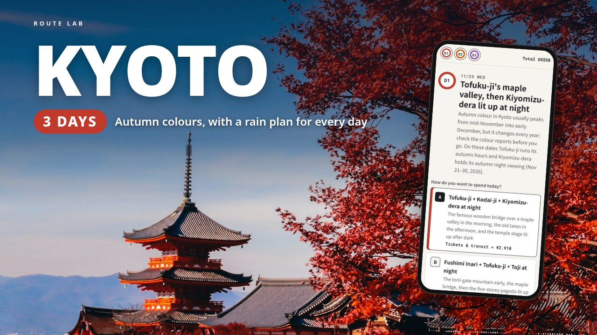

3-DAY AUTUMN ITINERARY · JAPAN
Kyoto in late November, planned around opening times: Tofuku-ji's Tsutenkyo bridge when the gates open at 8:30, Tenryu-ji's garden at its special 7:30 opening, and Kiyomizu-dera or Eikando lit up after dark. You stay at Kyoto Station and get around on JR, city buses and one Subway & Bus 1-day pass.
This page is a free outline of the itinerary: where each day goes, what is in the file and who it suits. The download adds the stop-by-stop times, a map link and a checked price for every stop, and a budget that adds itself up as you pick.

The neighbourhoods and main stops for each of the 3 days. The download has the times, the order, a map link and a price for every stop, and the alternative plan for each day.
Tofuku-ji's Tsutenkyo bridge at its 8:30 autumn opening, Kodai-ji, a yudofu lunch near Kiyomizu-dera, and Kiyomizu-dera's autumn night viewing (Nov 21-30, 2026). Or Fushimi Inari early, Tofuku-ji, then Toji's pagoda lit up at night.
Rain plan: Sanjusangendo and the Kyoto National Museum's Tale of Genji exhibition (until Nov 29, 2026).
Eikando's autumn exhibition, Nanzen-ji, a yudofu lunch at Junsei, the Philosopher's Path and Ginkaku-ji. Or the same loop in reverse, ending with Eikando's night light-up.
Rain plan: Nanzen-ji, a long lunch and a short Eikando visit.
Tenryu-ji's garden at its special 7:30 opening (Nov 14-30, 2026), the bamboo grove, Jojakko-ji and soba at Arashiyama Yoshimura. Or Kitano Tenmangu's maple garden and Kinkaku-ji.
Rain plan: Toji and the Kyoto Railway Museum.
First-time or returning visitors who want Kyoto's autumn colours without planning every bus. It's priced for two adults, Wednesday 11/25 to Friday 11/27, 2026. You can use it on other dates from mid-November to early December, but check first: the special openings and light-ups have fixed end dates, the Kyoto National Museum closes on Mondays, the Kyoto Railway Museum closes on Wednesdays, and Okutan Kiyomizu closes on Thursdays.
It doesn't book anything and doesn't update itself, and it can't promise peak colour: timing changes every year. Hotels and trains to Kyoto are up to you. Autumn crowds are heavy, so buses can be slow and temples may limit entry.
US$9 on Gumroad. Personal use: for your own trip and the people you travel with. If the file is broken or won't open, you get a fix or a full refund within 14 days.